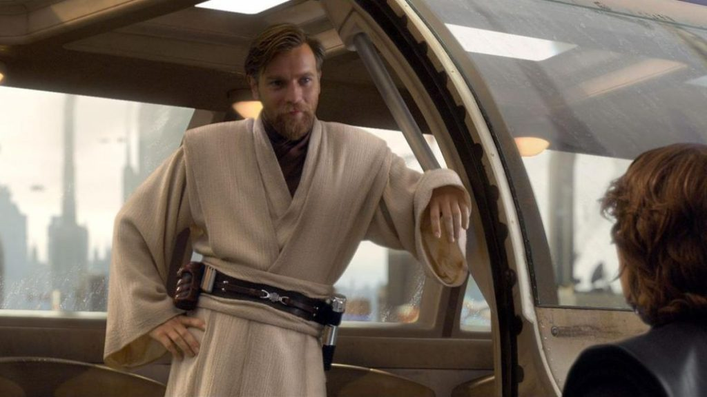

Obi-Wan Kenobi is a jedi master who serves as a big supporting character in the Star Wars Prequels. He has a cunning, calm, and a negotiative nature to himself that allows him to be quite affable and understanding. Serving as also a father and older brother figure to both Anakin Skywalker and Padme Amadala. He serves as my second favorite character in the whole series, right behind Darth Maul